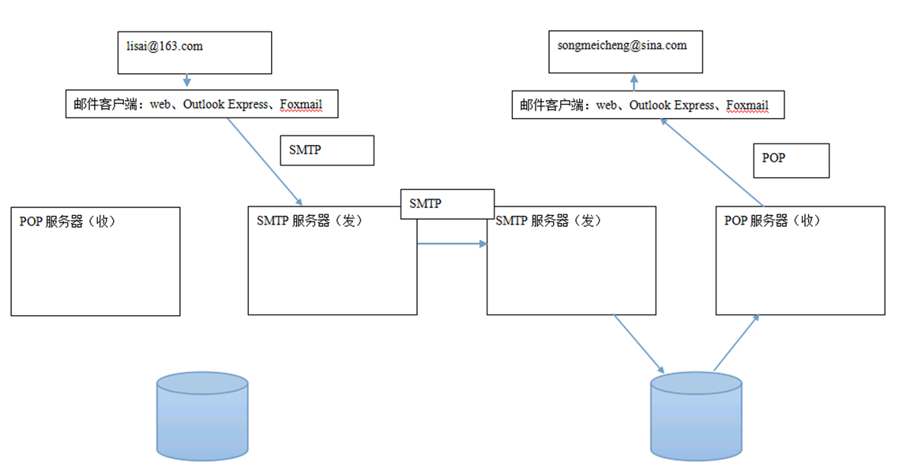
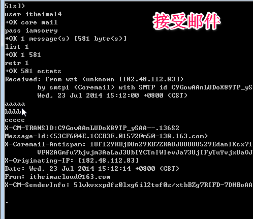

一、邮件协议：
SMTP（重点）：发送邮件的协议。Simple Message Transfer Protocal。默认端口：25
POP：邮局协议（收件协议）。Post Office Protocal。默认端口：110
二、邮件的发送过程

三、SMTP协议详解（重点）
telnet客户端演示如何发送一封邮件
1、前期准备：
a、两个邮箱：
b、查看邮箱的帮助文档，找到SMTP和POP服务器的地址
SMTP：smtp.163.com 25
POP: pop.163.com 110
c、把发邮件的用户名和密码用Base64进行编码(发送的邮件要是Base64编码了的)
itheimacloud aXRoZWltYWNsb3Vk
iamsorry aWFtc29ycnk=
2、发送过程：
telnet smtp.163.com 25(在命令行输入它，然后进入发送界面)
-----------------------------------------------------一下内容为SMTP协议



3、RFC822规范

邮件正文也是有规范的
四、JavaMail
1、是JavaEE技术之一，邮件开发的规范。
mail.jar(activation.jar JDK6.0+有了)
2、主要的接口或类
Message：代表着一封邮件。